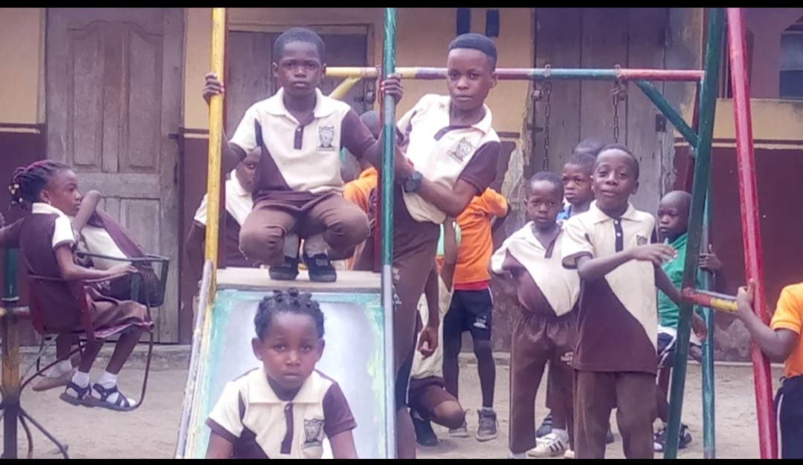

Bethel Tender Care Schools
Academic per Excellence

Bethel Tender Care Schools was established with a deep passion for nurturing young minds in a safe, disciplined, and spiritually grounded environment. Since its inception, the school has remained committed to raising children who are academically sound, morally upright, and confident in their abilities.
We believe that education goes beyond the classroom. At Bethel, every child is guided to discover their unique potential through a blend of quality teaching, character development, and creative exploration.
To provide a supportive and inspiring learning environment where children grow into responsible, God-fearing, and intellectually capable individuals.
To be a leading educational institution recognized for excellence in academics, character building, and leadership development.
At Bethel Tender Care Schools, we believe that every child carries greatness within them. Our mission has always been to nurture not just intelligent students, but responsible, disciplined, and God-fearing individuals.
Over the years, we have remained committed to creating a safe and inspiring environment where children can learn, grow, and confidently face the future. We partner with parents to ensure every child reaches their full potential.
— The ProprietorWe instill self-control, respect, and responsibility in every child.
We strive for the highest academic and personal standards.
We teach honesty, transparency, and strong moral values.
We prepare students to lead and make positive impact in society.